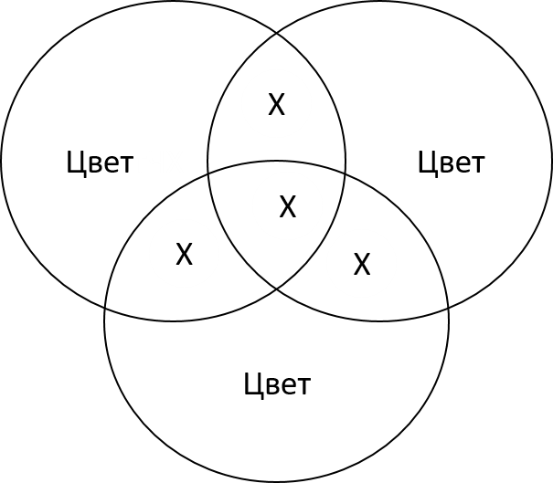

Цветовое разрешение и цветовые модели
Требования к уровню подготовки обучающихся
Должны знать: что такое цветовое разрешение - глубина цвета; цветовая модель; аддитивная цветовая модель RGB; субтрактивная цветовая модель CMYK; HSB; цветоделение, цветовая палитра; индексная палитра; фиксированная палитра.
Должны уметь: правильно выбирать цветовую модель, грамотно пользоваться палитрами.
|
|
Задание 1
Заполните таблицу, указав базовые цвета (параметры) каждой цветовой модели и область её применения.
| Цветовая модель | Модель | Область применения |
| СМУК |  | |
| RGB | ||
| HSB |
Задание 2
Заполните таблицу цветов при 24-битной глубине цвета в шестнадцатеричном и десятичном представлении.
| Коды/Цвета | Красный | Зеленый | Синий | Черный | Белый |
| Шестнадцатеричный | |||||
| Десятичный |
Задание 3
Скопируйте таблицу в MS Word, заполните пустые клетки, вместо точек поставьте недостающие символы HTML-разметки сохраните файл в своей папке под именем цвет.doc.
| Название цвета | Интенсивность | HTML-разметка | ||
| Красный | Зеленый | Синий | ||
| Черный | 00000000 | 0000....... | ||
| Красный | 00000000 | ........00 | ||
| ................ | 11111111 | 00FF00 | ||
| Синий | 00000000 | 00....FF | ||
| Голубой | 11111111 | ....FF.... | ||
| Желтый | 11111111 | FF....00 | ||
| Оттенок серого | 00001111 | 0F........ | ||
| .............. | 11111111 | 11111111 | FF....FF | |
Задача 1
Для кодирования цвета фона страниц Интернета используется атрибут bgcolor="#XXXXXX", где в кавычках задается шестнадцатеричное значение интенсивности цветовых компонентов 24-битовой RGB-модели. Какой цвет будет у страницы, заданной тэгом <body bgcolor="FFFF00">?
Задача 2
Ученик создал Web-страницу Интернета и задал сначала фон синим, а потом изменил его на красный. Как изменился вид атрибута bgcolor для тэга <body>?
1) с <body bgcolor="#00FF00"> на <body bgcolor="#FF0000">
1) с <body bgcolor="#00FF00"> на <body bgcolor="#00FF00">
1) с <body bgcolor="#FF0000"> на <body bgcolor="#FF00FF">
1) с <body bgcolor="#FF0000"> на <body bgcolor="#0000FF">
Задание 4
Выполните контрольный тест по теме.